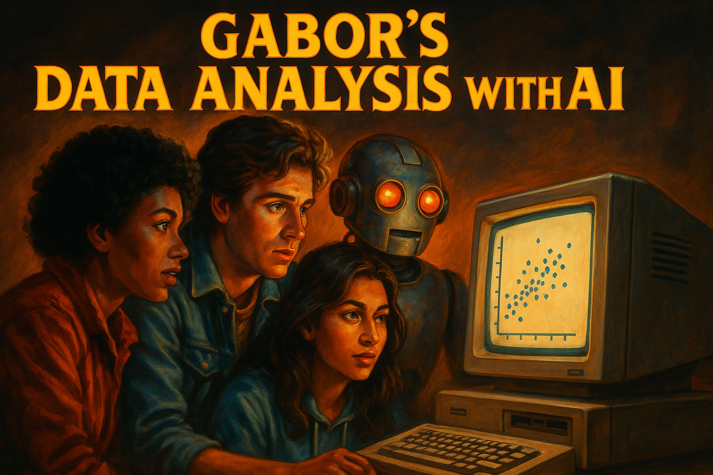

From Prompting to Context Engineering
2026-01-19
This slideshow is part of my data analysis with AI material.
Check out the course website gabors-data-analysis.com/ai-course/
What changed?
“The delicate art and science of filling the context window with just the right information for the next step.” — Andrej Karpathy
It’s not just about what words to use but what configuration of context will produce the desired behavior.
Claude 4.x and GPT-4.1+ models:
Implication: Be more explicit about what you want.
“Create a dashboard” → might give minimal output
“Create a fully-featured analytics dashboard with filters, charts, and interactive elements” → what you probably wanted
Source: OpenAI guide to prompt engineering
Still valid, but implementation has evolved.
Claude specifically benefits from XML tags to structure inputs:
<context>
You are analyzing panel data on firm productivity.
</context>
<data_description>
Variables: firm_id, year, revenue, employees, industry
Panel: 2010-2020, N=5000 firms
</data_description>
<task>
Estimate a fixed effects regression with year dummies.
Report results in a publication-ready table.
</task>New best practice: Upload full documentation
Even with massive context windows, breaking tasks helps:
Big development: Dedicated reasoning models
These models “think before responding” — internal chain of thought
Different models, different strategies:
| Model Type | Key Insight |
|---|---|
| Claude 4.x | Precise instruction following; use XML tags |
| GPT o3/o4-mini | Reasoning automatic; state objective + format |
| GPT-4.1/5 | Classic prompting; break into subtasks |
| Gemini 3 | Keep it simple; use default temperature |
Released April 2025. Key features:
Prompting tip: State objective + output format. Reasoning is automatic.
From Anthropic’s guidance:
Released November 2025. Google’s guidance:
What Gemini 3 does especially well:
For data analysis: Great for document analysis, long codebooks, and visual data (charts, graphs)
Claude and other models now support “extended thinking”:
When to use: Complex reasoning, multi-step problems, data analysis decisions
Cost: Higher latency, more tokens
Models can now:
This changes how we work with AI.
For data analysis, think about:
Long conversations degrade performance:
Solution: Start fresh for new tasks, use memory tools
We’ll dive deeper into:
See Week 03: System Prompts and Skills
More important than ever:
Turn 1: "Here's my data [upload]. Describe the variables
and check for issues."
Turn 2: "Run OLS of Y on X1, X2 with robust SEs.
Show diagnostics."
Turn 3: "Now add fixed effects. Compare results."
Turn 4: "Create publication-ready table.
AER style, 3 columns."For data analysis work:
You are helping with academic research in economics.
Preferences:
- R with tidyverse
- viridis color scheme
- Publication-quality output
- Show code and explain decisions
- Flag potential issues proactively
Current project: [brief description]More on this in Week 03
Answer: Doesn’t matter for output quality. Do what feels natural.
This version: 2026-01-19 (v0.6.0)
Previous versions: v0.3.2 (2025-05-28), v0.1.2 (2025-04-21)
Gabors Data Analysis with AI – Prompting – 2026-01-19 v0.6.0